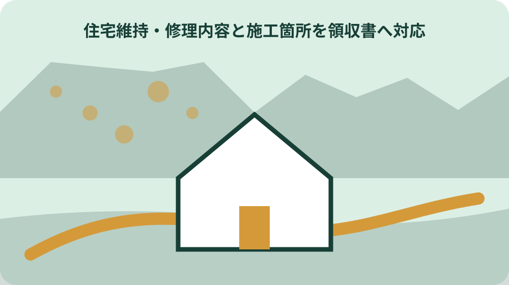
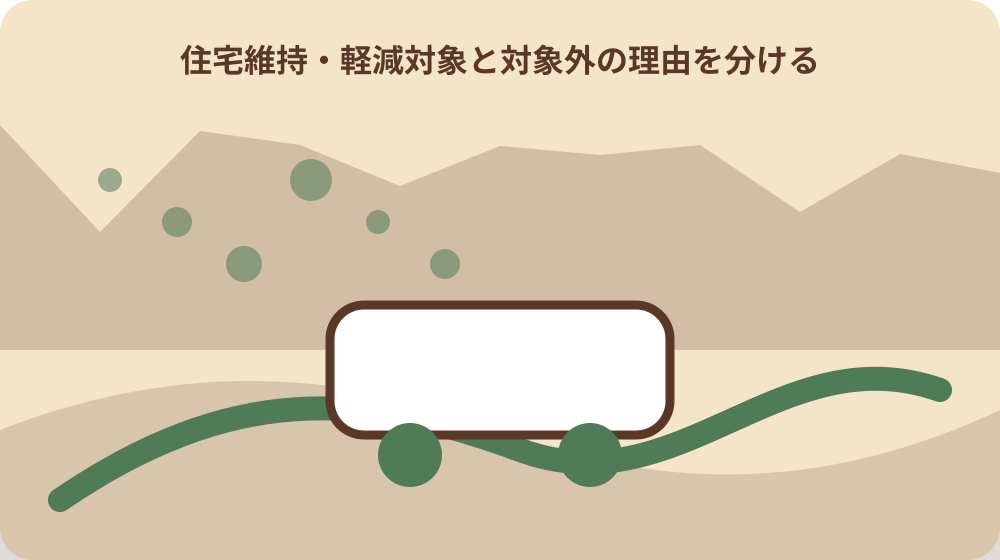

先に結論を確認する
この記事の答え：森町は漏水の可能性があると案内しています。全ての蛇口を閉めた条件を確認し、指定事業者や上下水道課へ相談します。
森町で最初に照合する条件：全蛇口を閉めた状態のパイロット、検針値、確認時刻を修理前後で記録する。
検針値が増えた月を請求期間と結ぶ
家の中と外水栓等の全ての蛇口を閉めても水道メーターのパイロットが動く場合、森町は漏水の可能性があると案内している。最初に直近数回の検針値と請求対象期間を並べ、増加が始まった回を特定する。漏水案件では、対象住所、お客さま番号、検針日、使用量を同じ表に置き、別の給水契約の数値を混ぜない。
宅地内で発生した漏水による水道料金は原則として使用者が支払う。高額になった一回だけでなく、通常時の使用量を同じ単位で置く。町公式の対象条件と施工者の現場説明を別欄にし、写真から見えない配管状態を家族だけで補わない。
一定の基準を満たす漏水は修理後に水道料金の一部軽減を申請できる場合がある。軽減されるとの前提で支払記録を省かず、申請前の請求額も残す。写真には撮影日、修理前後、施工箇所を付け、領収書と申請書が同じ修理を指すことを確認する。
森町の漏水軽減ページの問い合わせ先は上下水道課上水道管理係で、電話番号は0538-85-6326である。確認先は上下水道課上水道管理係とし、問い合わせ日と回答を修理案件へ結ぶ。最後に上下水道課へ確認した事項、回答日、未確認事項を残し、軽減の可否を記事だけで断定しない。
全蛇口を閉めてパイロットを確認する
家の中と外水栓等の全ての蛇口を閉めても水道メーターのパイロットが動く場合、森町は漏水の可能性があると案内している。蛇口、外水栓、使用中の器具を止めた条件と確認時刻を写真メモへ入れる。漏水案件では、対象住所、お客さま番号、検針日、使用量を同じ表に置き、別の給水契約の数値を混ぜない。
軽減対象は地下埋設部分、壁内、床下など善良な管理でも発見が困難な漏水である。発見困難な箇所かどうかはパイロットの動きだけで確定しない。町公式の対象条件と施工者の現場説明を別欄にし、写真から見えない配管状態を家族だけで補わない。
客観的に容易に発見できる漏水や、気づきながら放置した漏水も軽減対象外として列挙されている。見える漏れを放置していた案件と、床下など見えない漏れを同じ経緯にしない。写真には撮影日、修理前後、施工箇所を付け、領収書と申請書が同じ修理を指すことを確認する。
森町の漏水軽減ページの問い合わせ先は上下水道課上水道管理係で、電話番号は0538-85-6326である。動きが続いたらメーター写真と対象住所を用意して町または指定事業者へ連絡する。最後に上下水道課へ確認した事項、回答日、未確認事項を残し、軽減の可否を記事だけで断定しない。
修理前写真にメーターと漏水箇所を分けて残す
家の中と外水栓等の全ての蛇口を閉めても水道メーターのパイロットが動く場合、森町は漏水の可能性があると案内している。メーター全景、指針、パイロットが読める写真を修理前の同じ時刻帯で撮る。漏水案件では、対象住所、お客さま番号、検針日、使用量を同じ表に置き、別の給水契約の数値を混ぜない。
軽減申請には修繕工事写真を添えて上下水道課へ提出する。申請添付の修繕写真と、家族向けの検針写真は用途を分けて管理する。町公式の対象条件と施工者の現場説明を別欄にし、写真から見えない配管状態を家族だけで補わない。
軽減対象は地下埋設部分、壁内、床下など善良な管理でも発見が困難な漏水である。地下、壁内、床下のどこだったかは施工者の説明と写真番号で対応させる。写真には撮影日、修理前後、施工箇所を付け、領収書と申請書が同じ修理を指すことを確認する。
国の資料は給水装置工事事業者の情報不足に起因して需要者が修繕依頼時に問題を受けた事例があるとしている。国が挙げる修繕依頼時の情報不足を避けるため、症状と撮影日時を依頼時に渡す。最後に上下水道課へ確認した事項、回答日、未確認事項を残し、軽減の可否を記事だけで断定しない。

指定事業者名簿の基準日を確認する
森町の指定事業者名簿は2026年1月5日現在の事業所名、電話番号、所在地を掲載している。保存済みの古い名簿ではなく、依頼日に公開されている名簿で事業者名を照合する。漏水案件では、対象住所、お客さま番号、検針日、使用量を同じ表に置き、別の給水契約の数値を混ぜない。
指定事業者名簿には森町内だけでなく袋井市、磐田市、掛川市など町外所在の事業者も掲載されている。町外所在地でも名簿掲載事業者はいるため、所在地だけで指定外と判断しない。町公式の対象条件と施工者の現場説明を別欄にし、写真から見えない配管状態を家族だけで補わない。
軽減対象には町指定の給水装置工事事業者が修理したことも必要である。料金軽減を検討する案件では指定事業者による修理条件を依頼前に共有する。写真には撮影日、修理前後、施工箇所を付け、領収書と申請書が同じ修理を指すことを確認する。
国の資料は水道事業者に指定事業者情報を需要者が容易に得られる形で提供するよう求めている。候補事業者の連絡先、依頼日、対応可否を残し、名簿掲載と工事受諾を混同しない。最後に上下水道課へ確認した事項、回答日、未確認事項を残し、軽減の可否を記事だけで断定しない。
修理内容と施工箇所を領収書へ対応させる
軽減対象には町指定の給水装置工事事業者が修理したことも必要である。領収書の事業者名を指定名簿の正式名と照合し、略称だけで別会社と誤認しない。漏水案件では、対象住所、お客さま番号、検針日、使用量を同じ表に置き、別の給水契約の数値を混ぜない。
軽減申請書には修理した町指定事業者の証明押印が必要である。証明押印が必要な申請書を修理後に初めて示さず、依頼時に対象書類を確認する。町公式の対象条件と施工者の現場説明を別欄にし、写真から見えない配管状態を家族だけで補わない。
軽減申請には修繕工事写真を添えて上下水道課へ提出する。写真番号、修理日、施工箇所、領収書番号を一つの案件番号で結ぶ。写真には撮影日、修理前後、施工箇所を付け、領収書と申請書が同じ修理を指すことを確認する。
国の資料は給水装置工事事業者の情報不足に起因して需要者が修繕依頼時に問題を受けた事例があるとしている。工事項目が曖昧なら、修理した配管部位と交換内容を施工者へ確認して追記する。最後に上下水道課へ確認した事項、回答日、未確認事項を残し、軽減の可否を記事だけで断定しない。
軽減対象と対象外の理由を分ける
軽減対象は地下埋設部分、壁内、床下など善良な管理でも発見が困難な漏水である。発見困難という条件は地下等の場所と発見経緯の両方で確認する。漏水案件では、対象住所、お客さま番号、検針日、使用量を同じ表に置き、別の給水契約の数値を混ぜない。
露出配管部分、温水器等の特殊器具、水洗便所の洗浄装置の故障は軽減対象外として列挙されている。露出配管、特殊器具、便所洗浄装置という列挙を写真の施工箇所と照合する。町公式の対象条件と施工者の現場説明を別欄にし、写真から見えない配管状態を家族だけで補わない。
客観的に容易に発見できる漏水や、気づきながら放置した漏水も軽減対象外として列挙されている。容易に発見できたか、気づいた後に放置したかは日付順の経緯で確認する。写真には撮影日、修理前後、施工箇所を付け、領収書と申請書が同じ修理を指すことを確認する。
不正工事、町指定事業者以外による工事や修理、軽微な水量も軽減対象外として列挙されている。不正工事、指定外修理、軽微水量のどれにも当たらないと自己断定せず町へ確認する。最後に上下水道課へ確認した事項、回答日、未確認事項を残し、軽減の可否を記事だけで断定しない。
申請書の事業者証明と写真をそろえる
軽減申請書には修理した町指定事業者の証明押印が必要である。申請書の使用者欄と施工者証明欄を分け、誰が記入したかを残す。漏水案件では、対象住所、お客さま番号、検針日、使用量を同じ表に置き、別の給水契約の数値を混ぜない。
軽減申請には修繕工事写真を添えて上下水道課へ提出する。添付写真は修理箇所と修理内容が対応する並びにし、無関係なメーター写真だけにしない。町公式の対象条件と施工者の現場説明を別欄にし、写真から見えない配管状態を家族だけで補わない。
一定の基準を満たす漏水は修理後に水道料金の一部軽減を申請できる場合がある。申請可能性と軽減決定を同じ状態にせず、提出日、受理、結果を別々に記す。写真には撮影日、修理前後、施工箇所を付け、領収書と申請書が同じ修理を指すことを確認する。
森町の漏水軽減ページの問い合わせ先は上下水道課上水道管理係で、電話番号は0538-85-6326である。提出前に上下水道課へ必要部数と追加資料を確認し、確認日を申請控えへ書く。最後に上下水道課へ確認した事項、回答日、未確認事項を残し、軽減の可否を記事だけで断定しない。
修理後のパイロットと使用量を再確認する
家の中と外水栓等の全ての蛇口を閉めても水道メーターのパイロットが動く場合、森町は漏水の可能性があると案内している。修理後も全蛇口を閉めた同条件でパイロットを確認し、修理前写真と対にする。漏水案件では、対象住所、お客さま番号、検針日、使用量を同じ表に置き、別の給水契約の数値を混ぜない。
一定の基準を満たす漏水は修理後に水道料金の一部軽減を申請できる場合がある。次回検針値が下がったことだけを修理完了証明にせず、施工記録も保管する。町公式の対象条件と施工者の現場説明を別欄にし、写真から見えない配管状態を家族だけで補わない。
軽減申請には修繕工事写真を添えて上下水道課へ提出する。工事写真は修理前、作業中、修理後の区分を付けて施工箇所の連続性を示す。写真には撮影日、修理前後、施工箇所を付け、領収書と申請書が同じ修理を指すことを確認する。
宅地内で発生した漏水による水道料金は原則として使用者が支払う。料金は原則使用者負担なので、次回請求と軽減結果を別々に照合する。最後に上下水道課へ確認した事項、回答日、未確認事項を残し、軽減の可否を記事だけで断定しない。
検針値・写真・領収書を一案件に束ねる
家の中と外水栓等の全ての蛇口を閉めても水道メーターのパイロットが動く場合、森町は漏水の可能性があると案内している。検針日と撮影日が異なる場合は同じ日へ書き換えず、時間順に並べる。漏水案件では、対象住所、お客さま番号、検針日、使用量を同じ表に置き、別の給水契約の数値を混ぜない。
軽減申請には修繕工事写真を添えて上下水道課へ提出する。写真のファイル名に対象住所を露出し過ぎず、案件番号で領収書と結ぶ。町公式の対象条件と施工者の現場説明を別欄にし、写真から見えない配管状態を家族だけで補わない。
軽減申請書には修理した町指定事業者の証明押印が必要である。申請書控えには施工者証明の有無を記し、領収書だけで代替した扱いにしない。写真には撮影日、修理前後、施工箇所を付け、領収書と申請書が同じ修理を指すことを確認する。
森町の指定事業者名簿は2026年1月5日現在の事業所名、電話番号、所在地を掲載している。名簿の基準日、依頼日、修理日、申請日を四つの別項目にする。最後に上下水道課へ確認した事項、回答日、未確認事項を残し、軽減の可否を記事だけで断定しない。

次の所有者へ配管位置と修理範囲を渡す
軽減対象は地下埋設部分、壁内、床下など善良な管理でも発見が困難な漏水である。床下や地下の修理位置は平面図や現場写真に方位と目印を付ける。漏水案件では、対象住所、お客さま番号、検針日、使用量を同じ表に置き、別の給水契約の数値を混ぜない。
軽減対象には町指定の給水装置工事事業者が修理したことも必要である。指定事業者が修理した事実と、将来も同じ事業者へ依頼すべきかは分ける。町公式の対象条件と施工者の現場説明を別欄にし、写真から見えない配管状態を家族だけで補わない。
軽減申請には修繕工事写真を添えて上下水道課へ提出する。修繕写真の写っていない配管全体まで更新済みと伝えず、施工範囲を限定する。写真には撮影日、修理前後、施工箇所を付け、領収書と申請書が同じ修理を指すことを確認する。
森町の指定事業者名簿は2026年1月5日現在の事業所名、電話番号、所在地を掲載している。引渡し時には最新の指定名簿を再確認し、過去の電話番号を現行連絡先として保証しない。最後に上下水道課へ確認した事項、回答日、未確認事項を残し、軽減の可否を記事だけで断定しない。
再発時に前回案件と今回案件を分ける
家の中と外水栓等の全ての蛇口を閉めても水道メーターのパイロットが動く場合、森町は漏水の可能性があると案内している。前回と同じパイロット症状でも、今回の検針日と使用量で新しい案件を起こす。漏水案件では、対象住所、お客さま番号、検針日、使用量を同じ表に置き、別の給水契約の数値を混ぜない。
客観的に容易に発見できる漏水や、気づきながら放置した漏水も軽減対象外として列挙されている。前回の放置期間を今回へ転記せず、気づいた日と連絡日を改めて記す。町公式の対象条件と施工者の現場説明を別欄にし、写真から見えない配管状態を家族だけで補わない。
不正工事、町指定事業者以外による工事や修理、軽微な水量も軽減対象外として列挙されている。以前の軽減結果から今回も対象になると推定せず、施工者と町へ再確認する。写真には撮影日、修理前後、施工箇所を付け、領収書と申請書が同じ修理を指すことを確認する。
森町の漏水軽減ページの問い合わせ先は上下水道課上水道管理係で、電話番号は0538-85-6326である。同じ上下水道課へ連絡する場合も、前回受付日と今回受付日を分ける。最後に上下水道課へ確認した事項、回答日、未確認事項を残し、軽減の可否を記事だけで断定しない。
大石の視点：減免申請より先に修理証跡を完成させる
宅地内で発生した漏水による水道料金は原則として使用者が支払う。公的事実は原則負担と条件付き軽減であり、軽減を前提に修理を遅らせる根拠ではない。漏水案件では、対象住所、お客さま番号、検針日、使用量を同じ表に置き、別の給水契約の数値を混ぜない。
一定の基準を満たす漏水は修理後に水道料金の一部軽減を申請できる場合がある。大石は、漏水停止、施工者証明、修繕写真、領収書の順で証跡を完成させることを勧める。町公式の対象条件と施工者の現場説明を別欄にし、写真から見えない配管状態を家族だけで補わない。
軽減申請書には修理した町指定事業者の証明押印が必要である。この確認順は町の必須手順を引用したものではなく、必要資料の欠落を防ぐ私見である。写真には撮影日、修理前後、施工箇所を付け、領収書と申請書が同じ修理を指すことを確認する。
軽減申請には修繕工事写真を添えて上下水道課へ提出する。公的な対象判断は上下水道課に委ね、私見による整理表を軽減決定書の代わりにしない。最後に上下水道課へ確認した事項、回答日、未確認事項を残し、軽減の可否を記事だけで断定しない。